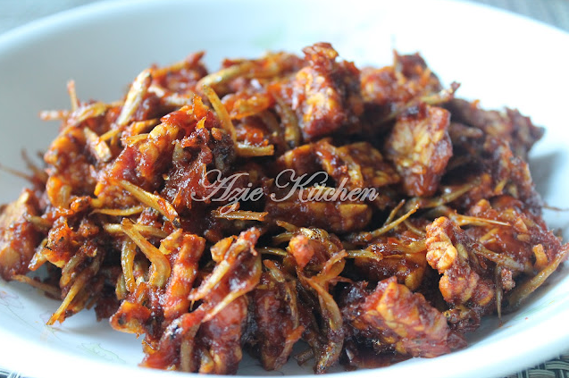

Sambal Ikan Bilis

Description/Penerangan Resepi
Ikan bilik rangup dicampur dengan tempe nipis dan rangup. Makan dengan nasi putih je cukup dah buat kita nak bertambah.
Ada juga yang suka masukkan kacang tanah sekali dalam masakan ini. Buat banyak-banyak, simpan dalam bekas. Masa nak makan nasim hidangkan sama-sama.
Ingredients/Ramuan
- 1 mangkuk ikan bili - goreng
- 3 sudu besar cili kisar
- 5 ulas bawang merah - tumbuk
- Gula
- Garam
- Minyak untuk tumis
Steps
- Panaskan minyak dan tumis cili kisar sehingga wangi dan garing.
- Masukkan pula bawang merah yang ditumbuk kasar. Setelah wangi dan garing, masukkan gula. Gaul rata dan masukkan sedikit garam.
- Akhir sekali masukkan ikan bilis goreng. Gaul rata dan tutup api supaya ikan bilis kekal rangup.
- Makan dengan nasi putih panas-panas atau dicicah roti
- *Boleh dimasukkan dalam bekas bertutup dan tahan selama 3 hari*